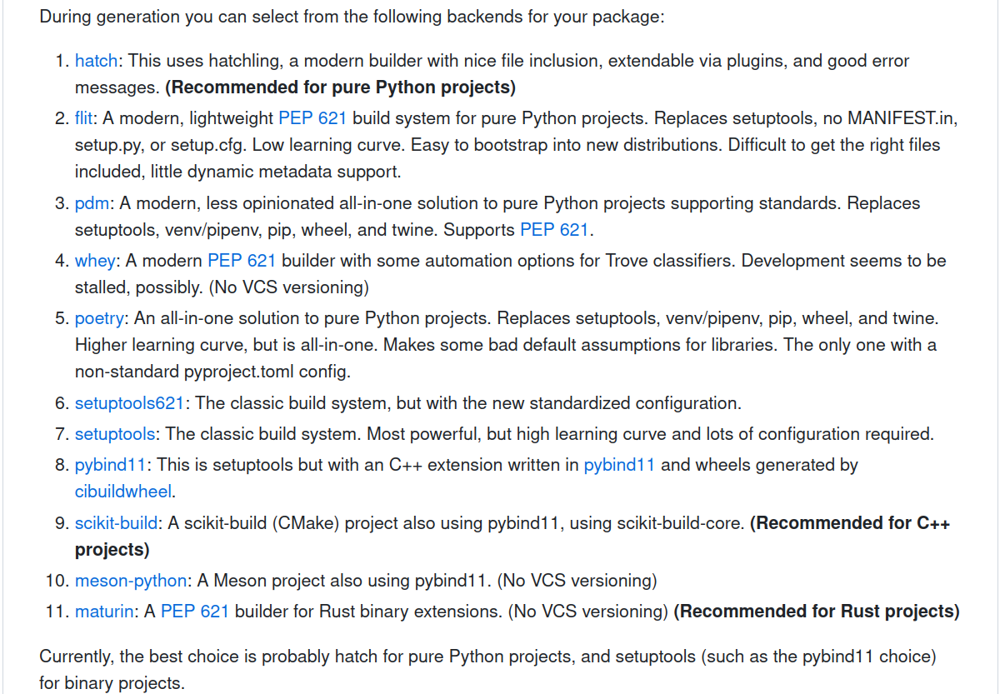
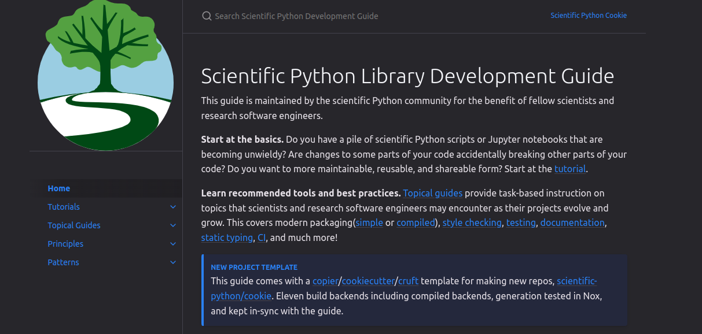
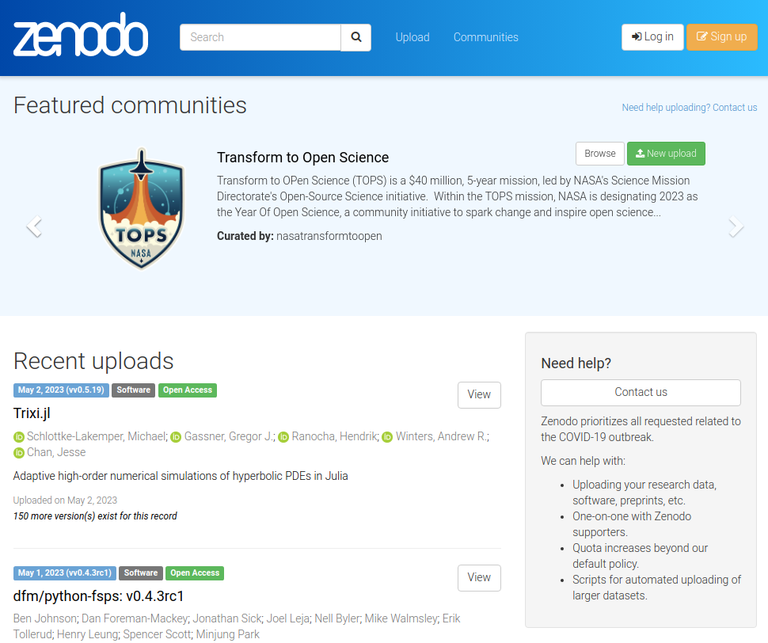

Distributing your Science: Turning analyses into scientific tools
University of Wisconsin-Madison
Package distribution
My motivations on this topic
- Research scientist in high energy physics and data science at University of Wisconsin-Madison Data Science Institute
- Analysis Systems area lead for IRIS-HEP
- Member of ATLAS collaboration
- Administrator of Scikit-HEP community organization
- Community member of the Scientific Python project
- Care about reusable open science to be able to push physics forward at the community scale
Knowledgeable colleagues
Princeton University, IRIS-HEP, PyPA, Scikit-Build
2i2c, The Executable Books Project, MyST
Hypothetical workflow for the typical scientist
- Work on idea for paper with collaborators
- Do exploratory analysis in scripts and Jupyter ecosystem
- As research progresses need to write more complicated functions and workflows
- Code begins to sprawl across multiple directories
- Software dependencies begin to become more complicated
- The code “works on my machine”, but what about your collaborators?
People heroically press forward, but this is painful, and not reusable
Reusable science, step by step
In this first scenario, you will probably see a lot of sys.path manipulation and utils.py
$ tree examples/edit_sys_path
examples/edit_sys_path
├── code
│ └── utils.py # helper functions rosen, rosen_der
├── example.py # want to import rosen, rosen_der
└── jupytext.toml
1 directory, 3 files# example.py
import sys
from pathlib import Path
# Make ./code/utils.py visible to sys.path
# sys.path[1] should be after cwd and before virtual environment
sys.path.insert(1, str(Path(__file__).parent / "code"))
from utils import rosen, rosen_der
x0 = np.array([1.3, 0.7, 0.8, 1.9, 1.2])
result = minimize(rosen, x0, method="BFGS",
jac=rosen_der, options={"disp": True})
optimized_params = result.x
# array([1.00000004, 1.0000001 , 1.00000021, 1.00000044, 1.00000092])- This is already better than having everything in a single massive file
- However, now things are tied to this relative path on your computer
# Make ./code/utils.py visible to sys.path
sys.path.insert(1, str(Path(__file__).parent / "code"))
from utils import rosen, rosen_derand are brittle to refactoring and change
- But we can do much better!
Next steps: Packaging your code
Real emphasis is just that your code is now installable
- Anywhere your Python virtual environment is active you can use your code
So following The Zen of Python this should be very straightforward?
$ python -c 'import this' | grep obvious
There should be one-- and preferably only one --obvious way to do it. Although that way may not be obvious at first unless you're Dutch.
Maybe not so much. :(
You might be asking: Why is there more than one thing?
The good news: Python packaging has improved dramatically in the last 5 years
- It has never been easier to just point your package manager to some code locally, or on the internet, and get working Python code installed and running on your machine regardless of operating system or architecture
- This is a small miracleThe bad news: Python packaging has expanded dramatically in the last 5 years
- By creating standards the PyPA allowed for an ecosystem of packaging backends to be created to tackle various problems (this is good!)
- This means that our The Zen of Python expectations are violated and we need to make design choices (hard for beginners)The okay news: You can probably default to the simplest thing
pure Python: Probably hatch compiled extensions: Probably setuptools + pybind11 or scikit-build-core + pybind11
Simple packaging example
Modern PEP 518 compliant build backends just need a single file: pyproject.toml
$ tree examples/simple_packaging
examples/simple_packaging
├── LICENSE
├── pyproject.toml # controls packaging and interactions with tools
├── README.md
├── src
│ └── rosen
│ ├── example.py
│ ├── __init__.py
│ └── _version.py
└── tests
└── test_example.py
3 directories, 7 filesSimple packaging example: pyproject.toml
What is .toml?
“TOML aims to be a minimal configuration file format that’s easy to read due to obvious semantics. TOML is designed to map unambiguously to a hash table. TOML should be easy to parse into data structures in a wide variety of languages.” — https://toml.io/ (emphasis mine)
In recent years TOML has seen a rise in popularity for configuration files and lock files. Things that need to be easy to read (humans) and easy to parse (machines).
Defining how your project should get built
Defining project metadata and requirements
[project]
name = "rosen"
dynamic = ["version"]
description = "Example package for demonstration"
readme = "README.md"
license = { text = "MIT" } # SPDX short identifier
authors = [
{ name = "Matthew Feickert", email = "matthew.feickert@cern.ch" },
]
requires-python = ">=3.8"
dependencies = [
"scipy>=1.6.0",
"numpy", # compatible versions controlled through scipy
]
...Configuring tooling options and interactions with other tools
Simple packaging example: Installing your code
You can now locally install your package into your Python virtual environment
$ cd examples/simple_packaging
$ python -m pip install --upgrade pip wheel
$ python -m pip install .
Successfully built rosen
Installing collected packages: rosen
Successfully installed rosen-0.0.1
$ python -m pip show rosen
Name: rosen
Version: 0.0.1
Summary: Example package for demonstration
Home-page:
Author:
Author-email: Matthew Feickert <matthew.feickert@cern.ch>
License: MIT
Location: ***/lib/python3.12/site-packages
Requires: numpy, scipy
Required-by:and use it anywhere
# example.py
import numpy as np
from scipy.optimize import minimize
# We can now import our code
from rosen.example import rosen, rosen_der
x0 = np.array([1.3, 0.7, 0.8, 1.9, 1.2])
result = minimize(rosen, x0, method="BFGS",
jac=rosen_der, options={"disp": True})
optimized_params = result.x
# array([1.00000004, 1.0000001 , 1.00000021, 1.00000044, 1.00000092])Packaging doesn’t slow down development
PEP 518 compliant build backends allow for “editable installs”
$ python -m pip install --upgrade --editable .
$ python -m pip show rosen | grep --ignore-case 'location'
Location: ***/lib/python3.12/site-packages
Editable project location: ***/examples/simple_packagingEditable installs add the files in the development directory to Python’s import path. (Only need to re-installation if you change the project metadata.)
Can develop your code under src/ and have immediate access to it
Packaging compiled extensions
With modern packaging infrastructure, packaging compiled extensions requires small extra work
$ tree examples/compiled_packaging
examples/compiled_packaging
├── CMakeLists.txt # Addition of CMake
├── LICENSE
├── pyproject.toml # build backend change
├── README.md
├── src
│ ├── basic_math.cpp # C++ extension
│ └── rosen_cpp
│ ├── example.py
│ └── __init__.py
└── tests
└── test_example.py
3 directories, 8 filespyproject.toml:
Swap build system to scikit-build-core + pybind11
# Specify CMake version and project language
cmake_minimum_required(VERSION 3.15...3.30)
project(${SKBUILD_PROJECT_NAME} LANGUAGES CXX)
# Setup pybind11
set(PYBIND11_FINDPYTHON ON)
find_package(pybind11 CONFIG REQUIRED)
# Add the pybind11 module to build targets
pybind11_add_module(basic_math MODULE src/basic_math.cpp)
install(TARGETS basic_math DESTINATION ${SKBUILD_PROJECT_NAME})src/basic_math.cpp:
Packaging compiled extensions: Installing
Installing locally is the same as for the pure-Python example:
$ cd examples/simple_packaging
$ python -m pip install --upgrade pip wheel
$ python -m pip install .
Successfully built rosen-cpp
Installing collected packages: rosen-cpp
Successfully installed rosen-cpp-0.0.1Module name is that given in C++:
Going further: Distributing packages
If your code is publicly available on the WWW in a Git repository, you’ve already done a version of distribution!
# General pattern is:
# python -m pip install "project @ git+https://example.com/repo/project.git@branch#subdirectory=path"
$ python -m pip install \
"git+https://github.com/matthewfeickert-talks/talk-urssi-summer-school-2024.git#subdirectory=examples/simple_packaging"(more reasonable font size, and more common, example)
# Works for pure-Python packages
$ python -m pip install --upgrade "git+https://github.com/scikit-hep/pyhf.git"
# as well as packages with compiled extensions
$ python -m pip install --upgrade "git+https://github.com/scikit-hep/iminuit.git"Ideally we’d prefer a more organized approach: distribution through a package index
First we need to create distributions of our packaged code.
Distributions that pip can install:
source distribution (sdist): A tarfile (
.tar.gz) of the source files of our package (subset of all the files in the repository)wheel: A zipfile (
.whl) of the file system structure and package metadata with any dependencies prebuilt- No arbitrary code execution, only decompressing and copying of files
To create these distributions from source code, rely on our package build backend (e.g. hatchling) and build frontend tool like build
$ python -m pip install --upgrade build
$ python -m build .
* Creating venv isolated environment...
* Installing packages in isolated environment... (hatch-vcs>=0.3.0, hatchling>=1.13.0)
* Getting build dependencies for sdist...
* Building sdist...
* Building wheel from sdist
* Creating venv isolated environment...
* Installing packages in isolated environment... (hatch-vcs>=0.3.0, hatchling>=1.13.0)
* Getting build dependencies for wheel...
* Building wheel...
Successfully built rosen-0.0.1.tar.gz and rosen-0.0.1-py3-none-any.whl
$ ls dist
rosen-0.0.1-py3-none-any.whl rosen-0.0.1.tar.gzCan now securely upload the distributions under ./dist/ to any package index that understands how to use them.
The most common is the Python Package Index (PyPI) which serves as the default package index for pip.
Distributing packages: conda-forge
The conda family of package managers (conda, mamba, micromamba, pixi) take an alternative approach from pip.
Instead of installing Python packages, they act as general purpose package managers and install all dependencies (including Python) as OS and architecture specific built binaries (.conda files — zipfile containing compressed tar files) hosted on conda-forge.
Allows an additional level of runtime environment specification not possible with just pip, though getting environment solves right can become more complicated.
Popular in scientific computing as arbitrary binaries can be hosted, including compilers (e.g. gcc, Fortran) and even the full NVIDIA CUDA stack!
With the change to full binaries only this also requires that specification of the environment being installed is important.
With sdists and wheels, if there is no compatible wheel available, pip will automatically fall back to trying to locally build from the sidst. Can’t do that if there is no matching .conda binary!
Defining the environment: Application vs. Library
Have been reasonably assuming that packaged code can be used in arbitrary environments with other code that is compatible (library-like).
For distributing code, this is probably the correct view, but your analysis is not a library. Your analysis is an application (a hand crafted implementation of code from libraries).
While your analysis might run with arbitrary configurations of the defined libraries and runtimes (reusable) want to also have a hash-level specified version for reproduciblity: a lock file
Defining the environment: Lock file
Lock files are simple: A hash level record of every dependency in the environment.
Allow for reproducibility by simply being an list of every file to download from the internet.
Should be programmatically generated from a high level requirements file and maintained in version control with your analysis.
Defining the environment: Comparing to Julia
The approach of pixi is similar to Julia.
Project.toml: describes the project on a high levelManifest.toml: absolute record of the state of the packages in the environment (a lock file)
Julia’s package manager Pkg.jl provides users a high level interface to edit Project.toml and then automatically updates Manifest.toml in response. Reproducibility of environment by default!
- Library:
Project.tomlin version control - Application:
Project.tomlandManifest.tomlin version control
Areas still to discuss another time
Full environment specification with Linux (Open Container Initiative (OCI)) container images (Docker, Apptainer, Podman)
Orchestration of multiple environments inside of an analysis
- Using workflow languages
The difficult realities of long term preservation
Assumptions of present technologies don’t translate forever into the future, infrastructure goes away
How to store files that aren’t “code” (e.g. images, training data, database files) — c.f. Zenodo
What analysis reuse looks like
- RECAST(particle physics)
Recommendations: Tooling
Don’t start your next Python project from scratch! Use the Scientific Python library development Cookiecutter: cookie
$ pipx install cookiecutter
$ cookiecutter gh:scientific-python/cookie
# [1/14] The name of your project (package):
# ...cookie will setup your repository for you with templated layouts for 11 different build backends and adheres to packaging and development best practices.
Recommendations: Community Guides
Packaging standards and best practices continue to change and get better. Instead of trying to maintain your own resources follow and engage with community resources created by the teams that are building the tools and infrastructure.
Recommendations: Collaboration
Find and start working with Research Software Engineers (RSE).
I don’t think that most scientists care/get excited about learning packaging tools. We just want things to work. RSEs can make that easier and are SUPER knowledgeable!
- I’m among the “not excited”. I care about packaging because I care about reusable tools for science.
Recommendations: Zenodo
Versioned archive of everything: code, documents, data products, data sets


Summary
Whirlwind tour of lifting analysis code from version control, to packages, distributed binaries, and the rest of the world
Not a hopeless bog of technical debt, but community infrastructure built by people who you can collaborate with
Reusable code can be a nucleation point for communities
References
- Level Up Your Python, Henry Schreiner
- Python Packaging User Guide, Packaging Python Projects Tutorial, The PyPA
- Scientific Python Library Development Guide, Scientific Python (originally made by Scikit-HEP)
- cookie, Scientific Python (originally made by Scikit-HEP)
- INTERSECT’s packaging tutorial, INTERSECT